If you’ve ever built an HDA in Houdini, you might have come across the following problem:
How can I switch between showing the final result and some visualization geo inside my HDA?
Displaying intermediate results or visualizing stuff inside an HDA can be a little tricky in Houdini, mainly since changing the Display Flag in a locked asset isn’t allowed, and oftentimes the built-in wireframe Guide Geometry option isn’t enough for the job.
I’ve run into this online and in my own work, and wanted to share a couple of ways you can easily display intermediate steps or visualization geometry in the viewport without too much fuss!
Whichever node has the Display Flag set on it is the one that shows up in the viewport. The result of the node that it’s on is passed through the first/leftmost output (when not using an Output SOP).
More info
With no Output SOP, the Display and Render flags determine the output of your node.
When using Output SOPs inside a subnet/HDA, the Display Flag is ignored, and the result that’s piped into the Output SOP (whose index is zero) is what shows up in the viewport.
More info
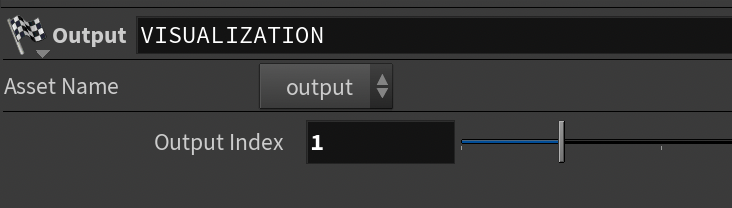
Caption
HDAs/Subnets can have multiple outputs when using the Output SOP.
More info
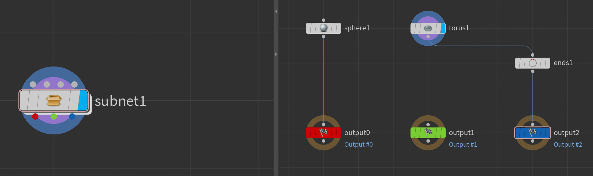
Multiple Outputs
You can change the Output for View Flag to switch which output is shown in the viewport.
More info
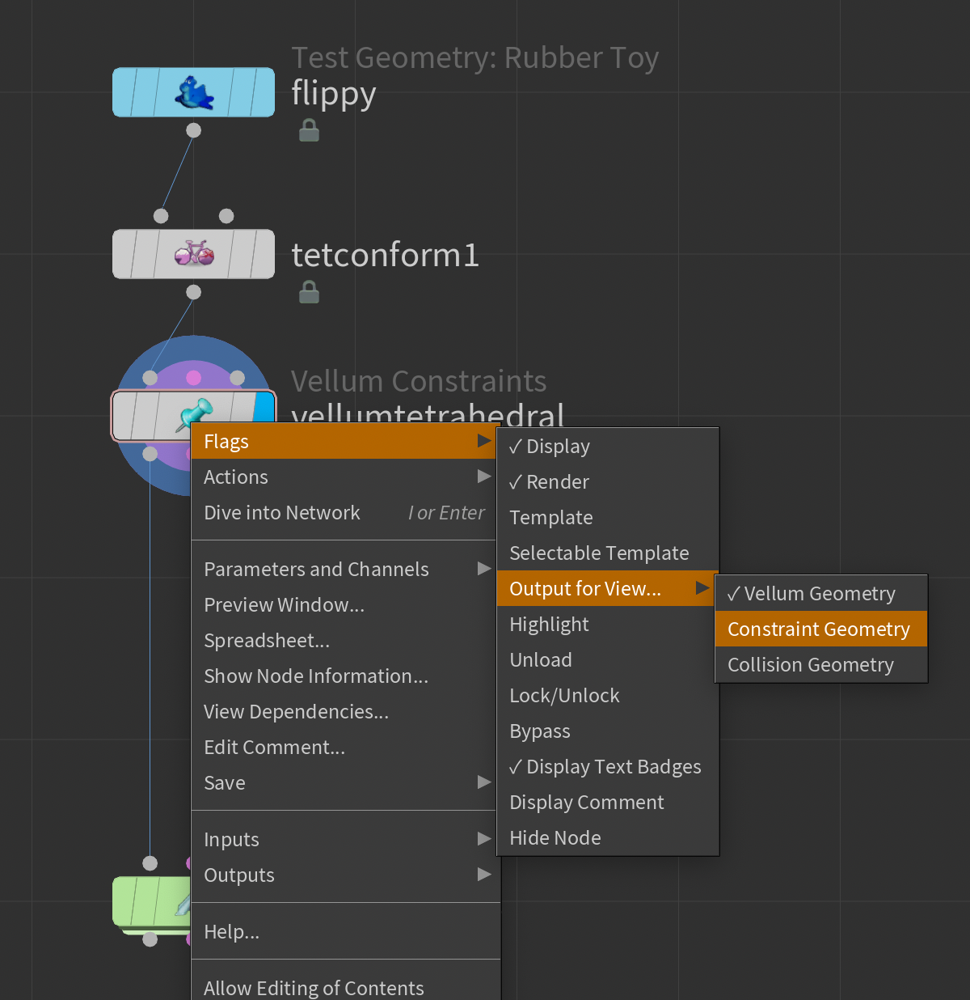
Output for View Menu
Display Flag can not be moved inside of a locked HDA, even with a Python callback.
More info
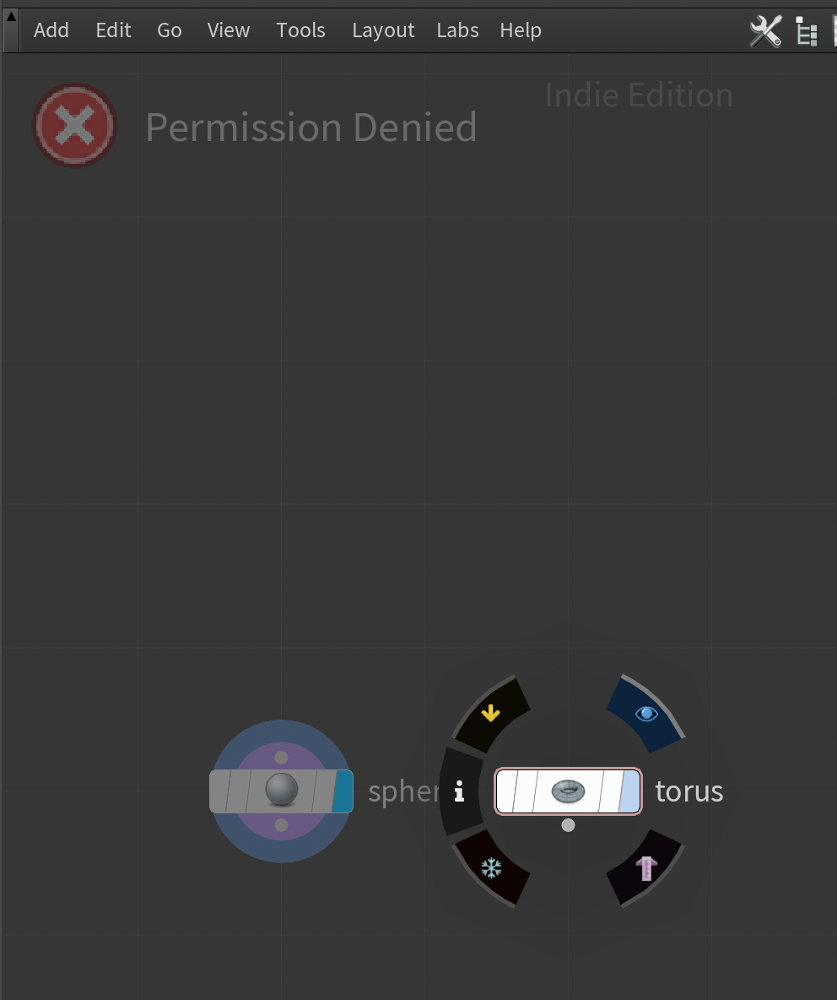
Permission Denied (Interface)
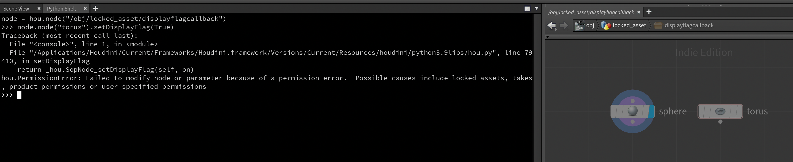
Permission Denied (Python)
node = hou.node("/obj/locked_asset/displayflagcallback")node.node("torus").setDisplayFlag(True)Traceback (most recent call last):File "<console>", line 1,in<module>File "/Applications/Houdini/Current/Frameworks/Houdini.framework/Versions/Current/Resources/houdini/python3.9libs/hou.py", line 79410,in setDisplayFlag
return _hou.SopNode_setDisplayFlag(self, on)hou.PermissionError: Failed to modify node or parameter because of a permission error. Possible causes include locked assets, takes, product permissions or user specified permissions
You could get even fancier than this tutorial using Python Viewer States, but we won’t be covering that here.
To demonstrate, we’ll be creating a super simple Voronoi fracturing HDA. The focus is definitely not on how this tool works, but how we can improve the user experience!
I’ve mentioned the terms Intermediate Steps and Visualization Geometry twice now, but I should explain a bit more clearly what I mean in terms of the example setup that we’ll use for the rest of the tutorial.
When your HDA wraps up a workflow that does a few things in order (like our example), it can be helpful to be able to see the result of each step. In this example, we’re building a basic fracturing HDA. For debugging purposes, it could be good to be able to inspect the noised-up volume and the scattered points. Creating these geometries is what I’m referring to as Intermediate Steps. They contribute to, but are not the final result.
It could also be nice to see an exploded view of all our pieces with different colors assigned to them (for this example…probably not that useful in practice, but let’s use it here as a demo!). Since this doesn’t really contribute to the final result at all and is just for debugging/inspection, I call it Visualization Geometry.
Easy to forget and accidentally leave the menu on the wrong selection and output the wrong thing
First, let’s create some Null SOPs to use as “anchors” for each thing we want to switch between. This helps keeps things clean, organized, and flexible.
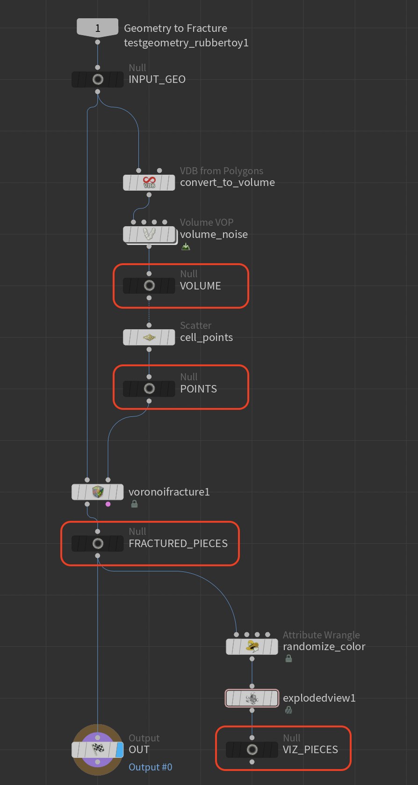
Anchor Nulls for each step
Next we’ll plug all our nulls into the switch in the same order that we want to have their corresponding items in the dropdown menu.
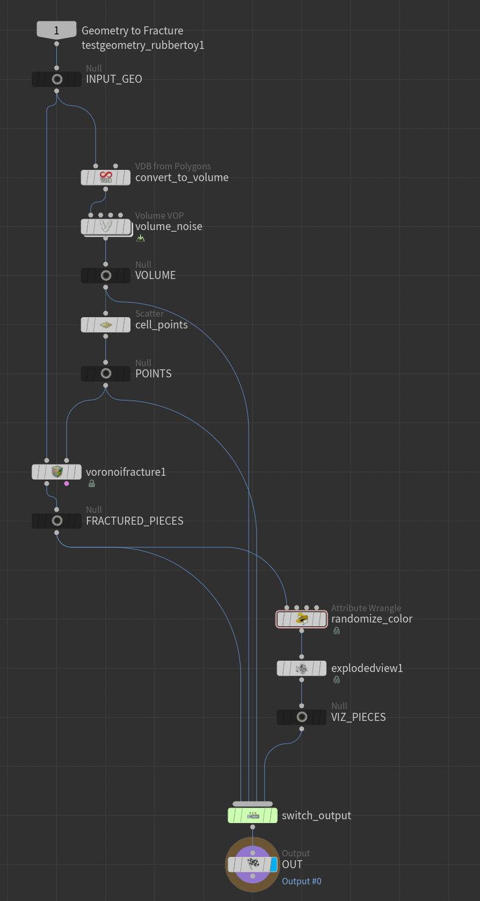
Nulls plugged into switch
Final Result (Fractured Pieces)
Noised-up Volume
Points
Exploded / Colorized Pieces
Another common technique is to create an Object Merge for each Null and put the switch off to the side to reduce clutter, but I’ll keep just plugging the nulls straight into the switch for this example.
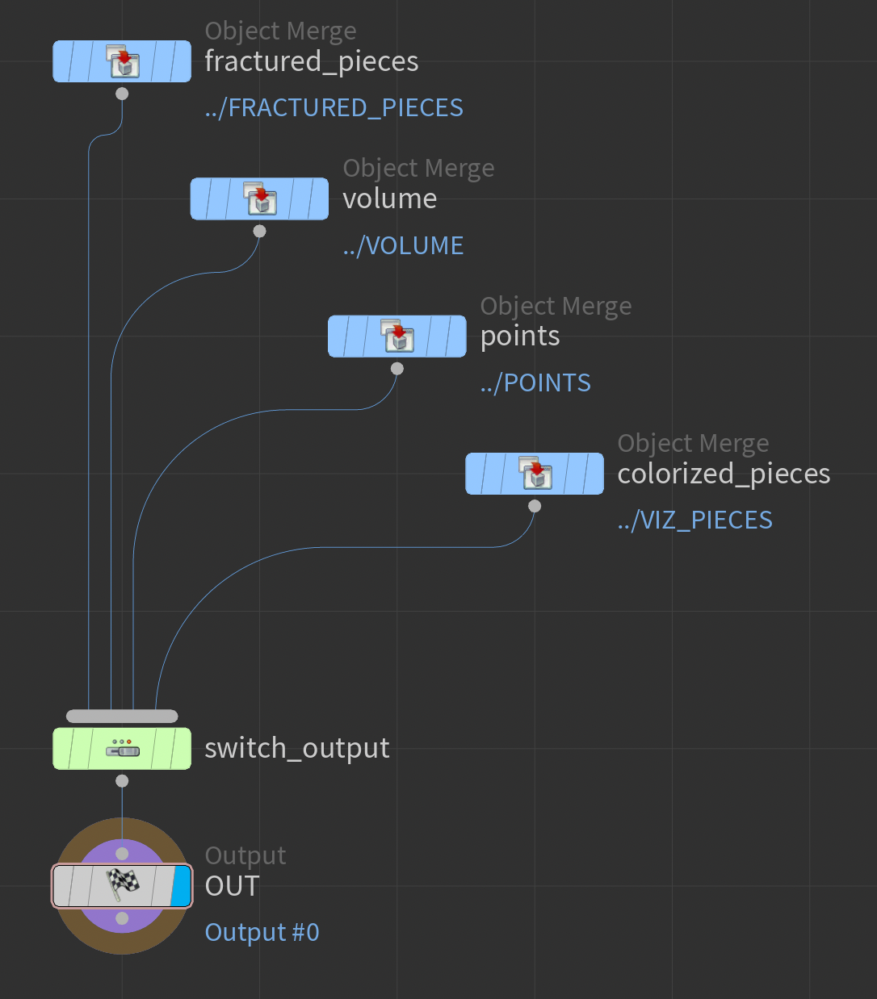
Object Merges into a switch
Switch SOPs are controlled by an integer parameter, so we can use an Ordered Menu to control the switch index, since they are essentially integer parameters themselves but with a more descriptive interface.
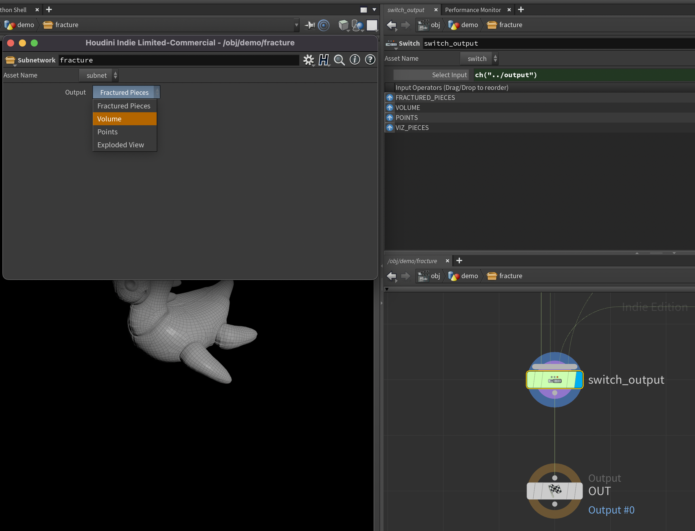
Ordered Menu linked to a Switch SOP
Creating a Menu Parameter for a Switch. Right Click > Open in New Tab for full rez version
Check out this post for more info about how menus are evaluated.
When you have one thing you’d like to visualize, a common technique is to add another Output SOP and connect it to your visualization geo. Whenever you want to view this visualization geo, you can just drop a Null SOP down, connect it to the extra output, and put the display flag on it (or use the Output for View Flag).
Requires the user to drop another node just to see the viz geo, or switch the
Output for View Flag themselves
Data from this output might not really be useful elsewhere
Could add clutter to your node if you already have many outputs
Since we have another output now, we can keep the final result flowing through the first output, so our users won’t get tripped up by accidentally leaving the output to something that was only meant for visualization purposes.
For switching between multiple visualization items, we can have just one menu on our interface somewhere called “Visualization Output” or something, and that can control what comes through our extra output.
Let’s take the additional output method above one step further and make it a bit slicker. It’s kind of annoying to either make a Null each time you want to view the visualization output, or click through the Output for View RMB menu (especially if you haven’t setup hotkeys for that), so let’s add a short callback to the menu parameter and do it automatically!
This is my favorite method because there’s no risk of accidentally leaving a menu on the wrong thing and passing the wrong output (not that I’ve ever done this in production and kicked it to the farm…). Also, it doesn’t require the user to muck around with creating another node just to see their visualization geo.
First, we’ll add another menu to control whether we’re displaying the final output geo (the fractured pieces) or the extra visualization geo.
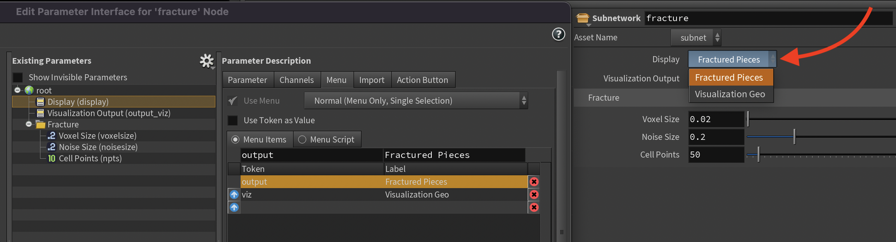
Second Menu
And let’s tighten up the two menus to make it a bit prettier:
Tighten it up
Optionally, we could add a disable/hide when rule to hide the visualization menu when we’re not viewing the visualization. That’s up to you! This is where setting a menu token can be useful, since if we ever decide to change the order or this menu or add new stuff, we don’t have to update any disable/hide when rules if our menu indices changed.
Next, we’ll add a parameter callback to this new menu that will switch the Output for View Flag for us when we change it.
Whenever a user changes a parameter in the interface (or runs a
hou.Parm.pressButton() with Python), Houdini runs whatever code is in the Callback Script field in the parameter’s Parameter Description from the Type Properties or Edit Parameter Interface window.
When writing parameter callback scripts in Python, we get access to a dict called kwargs that passes some super useful info about the parameter and its state.
Let’s print the value of kwargs and see what’s in it:
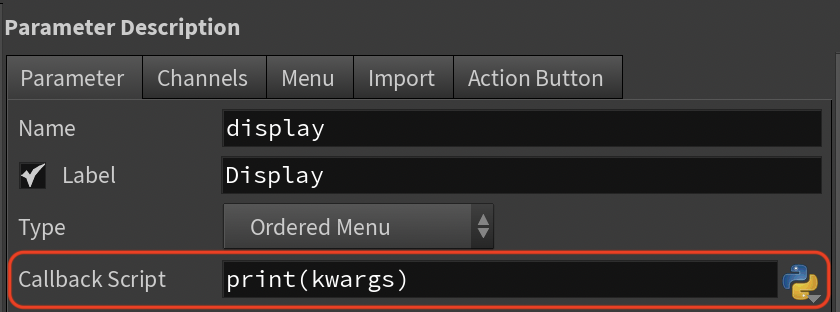
kwargsdict contents
{'node':<hou.SopNode of type subnet at /obj/geo4/fracture>,'parm':<hou.Parm display in/obj/geo4/fracture>,'script_multiparm_index':'-1','script_value0':'viz','script_value':'viz','parm_name':'display','script_multiparm_nesting':'0','script_parm':'display'}
One key in particular stands out: script_value. This is the new value that the parameter was just set to. One gotcha with this is that in this dictionary, it always returns a string, and in this case it’s the token string we added when we created the menu. We should keep this in mind when we write the callback.
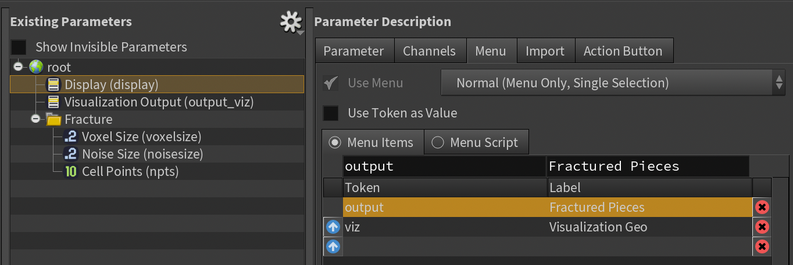
Menu token/labels
We can use one of the following snippets for our callback:
# In our case, we only have two menu items (0, 1) and two outputskwargs["node"].setOutputForViewFlag(kwargs["parm"].evalAsInt())
or if we’d rather compare the string from the menu token:
This is pretty good, but if we wanted we could take it another step further and instead of using two menus, flatten it down into one. We’re kind of doing a mix of the first method and the additional output method above.
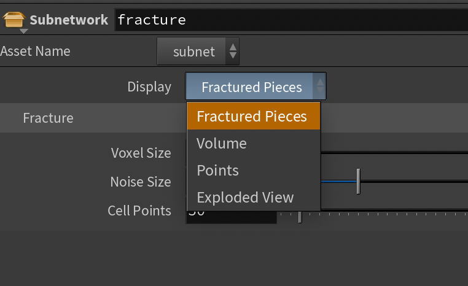
Single Menu
Let’s get rid of the second menu, and add an item called “Fractured Pieces” to index 0 of the Display menu. Now the menu has all the items in it, a lot like we had in the first example method.
The Output for View Flag label in the Network Editor gets its name from the name of the Output SOP.
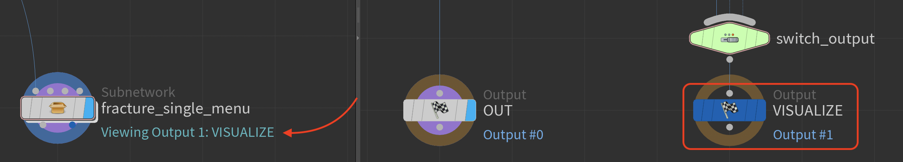
Output for View Flag Label
When you hover over an output port of an HDA, that label is set from the Type Properties dialog. Also, when this is set, the Output for View Flag label in the Network Editor will use this instead of the Output node’s name.
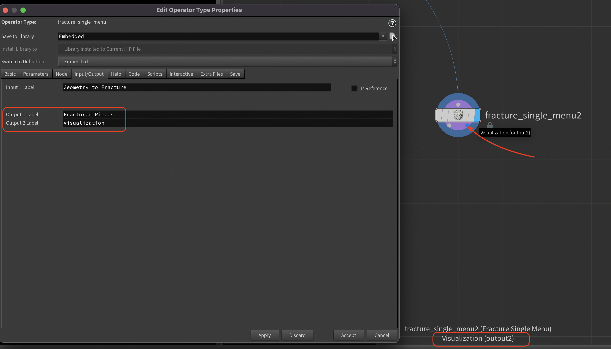
Output Label (Type Properties)
Color your inputs/outputs if you like
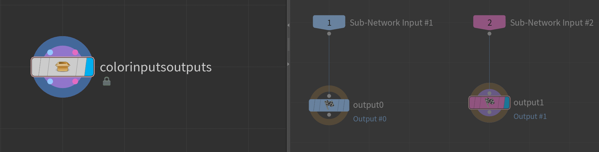
Input and output ports take on the same color as their corresponding nodes inside
Switch SOPs and Bitfields from Button / Icon Strips🔗